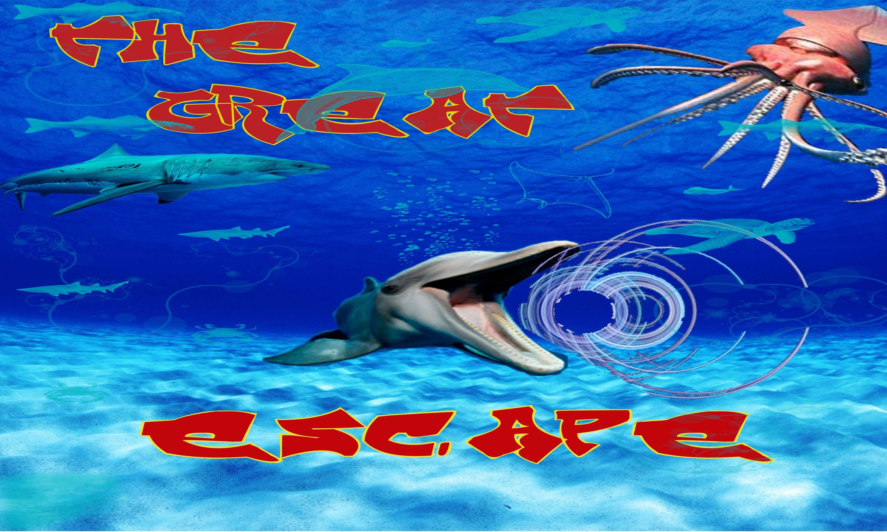

About
Gregory is an Interactive Arts and Science undergraduate student at the University of Brock who is currently in his (2nd) year of the program. Under his I.A.S.C degree he has 2 concentrations and 2 focuses:
Concentrations
- Digital Expression
- Digital Prototyping
Focuses
- Artificial Intelligence
- Web and Internet Technologies
As an Interactive Arts and Science Student, he has have obtained multiple skills, which include:
- Photo Manipulation
- Basic Animation
- Video Editing
- Adobe Photoshop
- Adobe Illustrator
- Adobe Indesign
- Game Design using Stencyl, GameMaker, and Unity
- Arduino Creations
- Artworks or Drawings
He has alot of experiences in game development softwares. He designed his first arcade games "Pac-man" and "Sonic The Hedgehog" using the 'Scratch' gaming software. In his final year at high School (St. Joan of Arc Catholic Secondary School, Mississauga, Ontario, Canada), he developed a water themed game titled "The Great Escape", using the 'Stencyl' gaming software for his final project as a computer science student. The Game cover can be seen below.
